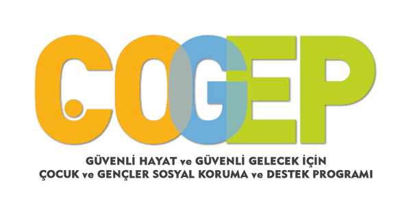
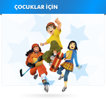

Polis tarihi Türk tarihi ile başlamıştır. Tarih boyunca çeşitli devlet kurmuş olan Türkler kamu düzeni ve güvenliğini ulusal savunma ile birlikte yürütmüşlerdir.
Eski Türkler'de kamu düzen ve güvenliği işleri Subaşı'lar tarafından belli yasalara uygun olarak yürütülmüştür. Oğuz Han'ın Oğuz Türesi, Cengiz Han'ın Uluğ Yasası, Timur'un Tüzükkatı o devirlerin belli başlı hukuk kuralları örnek olarak gösterilebilir.Bu yasalarda, suçların önlenmesi kadar işlenen suçlarda suçluların yakalanmasına da önem verilmiştir. Eski Türklerde Polis Teşkilatı bu açıklamalardan da anlaşılacağı üzere askeri teşkilat içinde yer almış ve Askeri özellikler göstermiştir.
Osman Bey Karahisarı ele geçirdiği zaman, kentin yönetimini oğlu Orhan Bey'e vermiş ve onun yanına arkadaşı olan Gündüz Alp'i de Subaşı olarak tayin etmiştir. Bu kişi bugünkü anlamda ilk Polis Amiridir. Subaşılar barış döneminde savaş için gerekli olan askerleri disipline etmek ve eğitmekle birlikte, kentin dirlik ve düzenini de sağlamışlardır. Savaş zamanında ise yetiştirdikleri kıtalara komuta etmişlerdir.
Mondros Mütarekesi'nin yapıldığı 1918 tarihinden, Milli Polis Teşkilatının kurulduğu 24 Haziran 1920 tarihine kadar, bütün yurtta Osmanlı Devletinin Polisi olarak hizmet etmiştir. 24 Haziran 1920 tarihinden, İstanbul Polis Müdüriyeti Umumiyesi'nin kaldırıldığı 24 şubat 1923 tarihine kadar geçen sürede ise polis teşkilatı ikilemiş, birisi merkezi İstanbul'da ve Osmanlı Devletine tabi olarak Kurtuluş Savaşı boyunca ve gittikçe daralmış olan bir bölgede ve yalnızca İstanbul'da, diğeri ise, merkezi Ankara'da hızla genişlemiş olan bir bölgede, İstanbul hariç Misak-ı Milli ile çizilen sınırlar içinde faaliyet göstermiştir.
Polisin Görevleri Biter mi ?
Polis
Polis
Polis
Polis
Polis
Polis
Emniyet Genel Müdürlüğü, rütbeleri polis memurluğundan başlayıp emniyet genel müdürlüğüne kadar uzanan, tüm il ve ilçelerde örgütlenmiş, sahil ve denizlerde görevini askeri polis olan Sahil Güvenlik, kırsalda ise görevini askeri polis olan jandarmaya bırakmış, kentte ise görevi kendisi yöneten iç güvenlikten sorumlu devlet teşkilatıdır. 10 Nisan 1845 tarihinde temeli atılmıştır.
Osman Bey Karahisarı ele geçirdiği zaman, kentin yönetimini oğlu Orhan Bey'e vermiş ve onun yanına arkadaşı olan Gündüz Alp'i de Subaşı olarak tayin etmiştir. Bu kişi bugünkü anlamda ilk Polis Amiridir. Subaşılar barış döneminde savaş için gerekli olan askerleri disipline etmek ve eğitmekle birlikte, kentin dirlik ve düzenini de sağlamışlardır. Savaş zamanında ise yetiştirdikleri kıtalara komuta etmişlerdir.
Emniyet makamları; Sadrazam, Yeniçeri ağası, Falakacı, Cebecibaşı ve Cebeciler, Kaptanpaşa, Topçubaşı ve Topçular, Bostancıbaşılar, Kadı ve Böcekcibaşından oluşmuştur. En büyük sorumlu olan Yeniçeri Ağası, suç işleyenleri Falakacılara dövdürmüş ve hapsettirmiştir. Falakacılar, Yeniçeri Ağasının emri altında, falaka taşıyan acemi oğlanlardan oluşmuştur.
İkinci Meşrutiyet ilanı ile 1908 yılında Fransız ve Alman Polis Teşkilatları esas alınarak Polis Teşkilatının yeniden organize edilmesi kararlaştırılmış ve 22 Temmuz 1909 yılında çıkarılan "İstanbul Vilayeti ve Emniyeti Umumiye Müdüriyeti Teşkilatına Dair Kanun" ile 31 Mart İsyanından sonra artık yaşaması imkânsız olan Zaptiye Nezareti kaldırılarak, yerine Dahiliye Nezaretine bağlı ve memlekete şamil polis işlerinin yürütülmesiyle görevli "Emniyet Umumiye Müdürlüğü" ve İstanbul Vilayetine bağlı bir polis müdüriyeti kurulmuştur. General Ali Galip Pasiner, Emniyet Umumiye Müdürlüğü'ne 12 Ağustos 1909 tarihinde tayin edilmiştir. Aynı yıl içinde Avrupa memleketlerinin polis işlerine dair bir inceleme seyahati yapmış ve polisin teşkilatının bu günkü esasını oluşturmuştur
21 Mayıs 1913 tarihli Polis Nizamnamesi, İkinci Meşrutiyet devrinin koşullarına ve zamanın ihtiyaçlarına göre hazırlanmış ve bu Nizamname ile polisin örgütlenmesi, görev ve yetkileri, personelin dereceleri, sınıfları, mesleğe giriş, yükselme ve diğer tüm özlük işleri, soruşturma, yargılama, istifa, tayin, izin cezalandırma işleri, levazım işleri, polis karakolları ve görevleri, polisin kıyafeti ve davranış biçimleri yeniden düzenlenmiştir.
Polisler
Bizi
Korurlar
...
terorizm ve kaçakçılık gibi yasadışı olayların yerleşkelerine yapılan ani baskın görevlerinde yer alır.Olağanüstü durumlara hazırlıklıdırlar.Üstün eğitim ve tehçizata sahiptirler..
Küreselleşen sorunlar sadece bir ulus-devletin sınırları içinde güvenlik sağlamayı imkânsız hale getirmiştir. Suçlular sınır aşan suçlar işlemekte, bir ülkede suç işleyip, diğer ülkelere kaçmaktadırlar. Bazen de suçun kaynağı başka bir ülke olabilmektedir. Suçun uluslararasılaşması polisliğin de uluslararasılaşmasını kaçınılmaz hale getirmektedir.